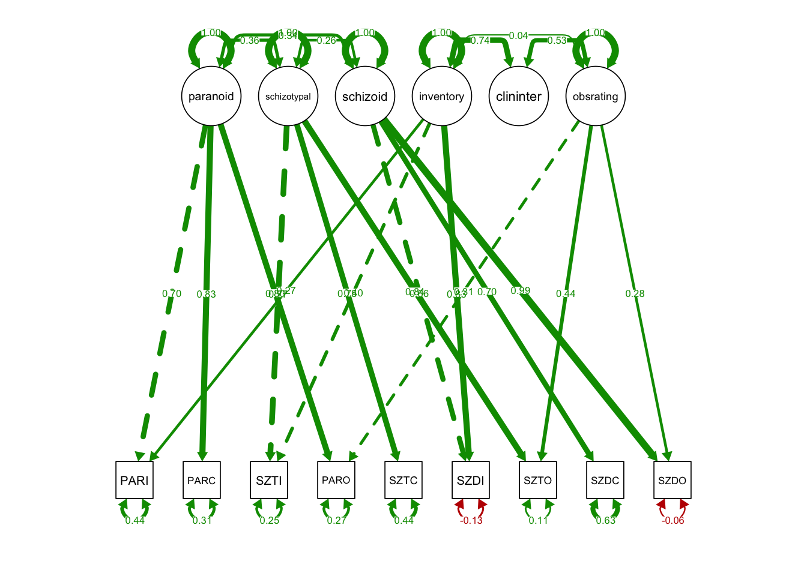
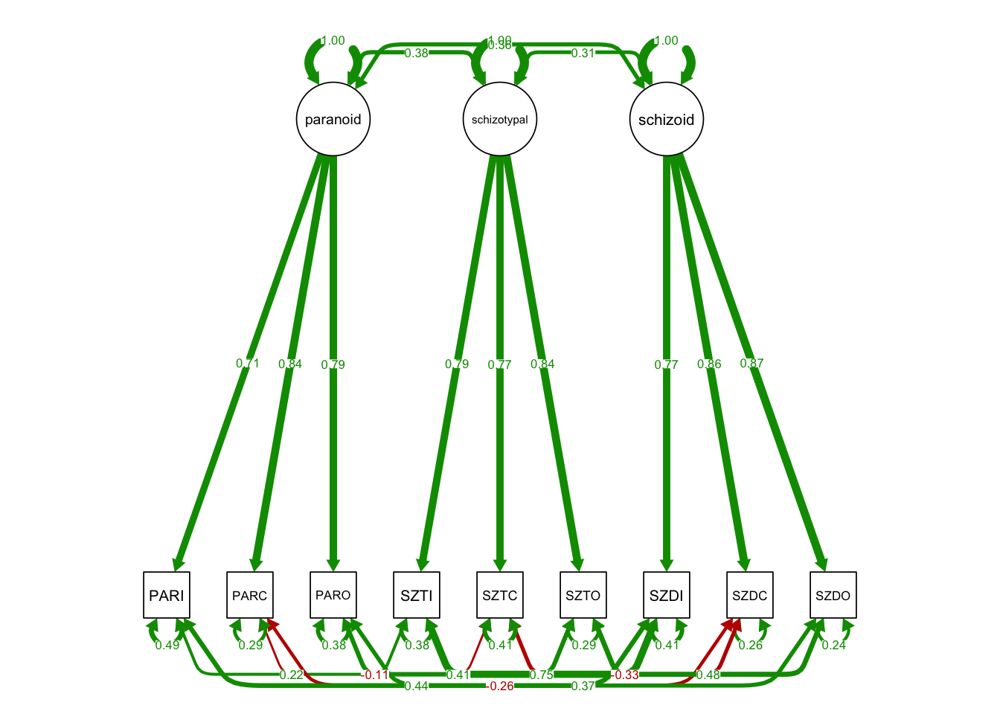

Chapter 21 Week15_2: Lavaan Lab 18 CFA of MTMM Matrix
In this lab, we will:
- run CFA on MTMM Matrix to investigate convergent and discrimative validity
Load up the lavaan and semPlot libraries:
- Let’s read in a simulated MTMM matrix:
Take a look at the matrix:
## [1] 9 9## PARI SZTI SZDI PARC SZTC SZDC PARO
## PARI 13.032100 3.831654 4.821083 6.230066 2.198598 2.242893 4.463909
## SZTI 3.831654 13.395600 6.280633 2.560975 6.498623 2.931111 1.852546
## SZDI 4.821083 6.280633 12.888100 2.205911 1.370590 6.967652 1.554111
## PARC 6.230066 2.560975 2.205911 8.643600 1.897447 1.633905 4.333795
## SZTC 2.198598 6.498623 1.370590 1.897447 9.180900 0.829008 1.627837
## SZDC 2.242893 2.931111 6.967652 1.633905 0.829008 8.122500 1.467864
## SZTO SZDO
## PARI 1.712295 1.612804
## SZTI 5.704037 1.799402
## SZDI 1.268419 4.950754
## PARC 1.856963 1.739304
## SZTC 4.700197 1.038442
## SZDC 1.710456 4.354686This is a covariance matrix. You could also convert it to a correlation matrix:
## PARI SZTI SZDI PARC SZTC SZDC PARO SZTO SZDO
## PARI 1.000 0.290 0.372 0.587 0.201 0.218 0.557 0.196 0.219
## SZTI 0.290 1.000 0.478 0.238 0.586 0.281 0.228 0.644 0.241
## SZDI 0.372 0.478 1.000 0.209 0.126 0.681 0.195 0.146 0.676
## PARC 0.587 0.238 0.209 1.000 0.213 0.195 0.664 0.261 0.290
## SZTC 0.201 0.586 0.126 0.213 1.000 0.096 0.242 0.641 0.168
## SZDC 0.218 0.281 0.681 0.195 0.096 1.000 0.232 0.248 0.749
## PARO 0.557 0.228 0.195 0.664 0.242 0.232 1.000 0.383 0.361
## SZTO 0.196 0.644 0.146 0.261 0.641 0.248 0.383 1.000 0.342
## SZDO 0.219 0.241 0.676 0.290 0.168 0.749 0.361 0.342 1.00021.1 PART I: Correlated methods specification
This model specifies both traits and methods factors:
MTMM.model.spec1.wrong <- '
# trait factors
paranoid =~ PARI + PARC + PARO
schizotypal =~ SZTI + SZTC + SZTO
schizoid =~ SZDI + SZDC + SZDO
# method factors
inventory =~ SZTI + PARI + SZDI
clininter =~ PARC + SZTC + SZDC
obsrating =~ PARO + SZTO + SZDO
'Fit the model:
- Since MTMM is a covariance matrix, we supply the sample size 500;
## Warning in lavaan::lavaan(model = MTMM.model.spec1.wrong, sample.cov = MTMM, : lavaan WARNING:
## the optimizer (NLMINB) claimed the model converged, but not all
## elements of the gradient are (near) zero; the optimizer may not
## have found a local solution use check.gradient = FALSE to skip
## this check.You might get the following warning message:
Warning message:
In lavaan::lavaan(model = MTMM.model.spec1.wrong, sample.cov = MTMM, :
lavaan WARNING:
the optimizer (NLMINB) claimed the model converged, but not all
elements of the gradient are (near) zero; the optimizer may not
have found a local solution use check.gradient = FALSE to skip
this check. - The problem is by default lavaan correlates all traits and methods factors;
- To get the model to fit, we need to manually uncorrelate traits and methods factors;
MTMM.model.spec1 <- '
# trait factors
paranoid =~ PARI + PARC + PARO
schizotypal =~ SZTI + SZTC + SZTO
schizoid =~ SZDI + SZDC + SZDO
# method factors
inventory =~ SZTI + PARI + SZDI
clininter =~ PARC + SZTC + SZDC
obsrating =~ PARO + SZTO + SZDO
# uncorrelated trait and method
paranoid ~~ 0*inventory
paranoid ~~ 0*clininter
paranoid ~~ 0*obsrating
schizotypal ~~ 0*inventory
schizotypal ~~ 0*clininter
schizotypal ~~ 0*obsrating
schizoid ~~ 0*inventory
schizoid ~~ 0*clininter
schizoid ~~ 0*obsrating
'Model fit:
## Warning in lav_object_post_check(object): lavaan WARNING: some
## estimated ov variances are negative## Warning in lav_object_post_check(object): lavaan WARNING: some
## estimated lv variances are negative## lavaan 0.6-12 ended normally after 242 iterations
##
## Estimator ML
## Optimization method NLMINB
## Number of model parameters 33
##
## Number of observations 500
##
## Model Test User Model:
##
## Test statistic 8.904
## Degrees of freedom 12
## P-value (Chi-square) 0.711
##
## Model Test Baseline Model:
##
## Test statistic 2503.656
## Degrees of freedom 36
## P-value 0.000
##
## User Model versus Baseline Model:
##
## Comparative Fit Index (CFI) 1.000
## Tucker-Lewis Index (TLI) 1.004
##
## Loglikelihood and Information Criteria:
##
## Loglikelihood user model (H0) -9877.263
## Loglikelihood unrestricted model (H1) -9872.811
##
## Akaike (AIC) 19820.525
## Bayesian (BIC) 19959.607
## Sample-size adjusted Bayesian (BIC) 19854.863
##
## Root Mean Square Error of Approximation:
##
## RMSEA 0.000
## 90 Percent confidence interval - lower 0.000
## 90 Percent confidence interval - upper 0.035
## P-value RMSEA <= 0.05 0.994
##
## Standardized Root Mean Square Residual:
##
## SRMR 0.016
##
## Parameter Estimates:
##
## Standard errors Standard
## Information Expected
## Information saturated (h1) model Structured
##
## Latent Variables:
## Estimate Std.Err z-value P(>|z|) Std.lv
## paranoid =~
## PARI 1.000 2.509
## PARC 0.969 0.065 15.016 0.000 2.432
## PARO 0.703 0.046 15.363 0.000 1.764
## schizotypal =~
## SZTI 1.000 2.815
## SZTC 0.807 0.049 16.469 0.000 2.270
## SZTO 0.716 0.039 18.235 0.000 2.015
## schizoid =~
## SZDI 1.000 2.345
## SZDC 0.843 0.045 18.857 0.000 1.977
## SZDO 0.863 0.119 7.243 0.000 2.024
## inventory =~
## SZTI 1.000 1.474
## PARI 0.670 0.083 8.036 0.000 0.987
## SZDI 1.999 0.335 5.966 0.000 2.946
## clininter =~
## PARC 1.000 NA
## SZTC 2.674 3.163 0.845 0.398 NA
## SZDC 13.997 20.660 0.677 0.498 NA
## obsrating =~
## PARO 1.000 0.694
## SZTO 1.522 0.516 2.948 0.003 1.057
## SZDO 0.807 0.231 3.492 0.000 0.560
## Std.all
##
## 0.697
## 0.828
## 0.796
##
## 0.766
## 0.749
## 0.836
##
## 0.662
## 0.699
## 0.994
##
## 0.401
## 0.274
## 0.832
##
## NA
## NA
## NA
##
## 0.313
## 0.438
## 0.275
##
## Covariances:
## Estimate Std.Err z-value P(>|z|) Std.lv
## paranoid ~~
## inventory 0.000 0.000
## clininter 0.000 0.000
## obsrating 0.000 0.000
## schizotypal ~~
## inventory 0.000 0.000
## clininter 0.000 0.000
## obsrating 0.000 0.000
## schizoid ~~
## inventory 0.000 0.000
## clininter 0.000 0.000
## obsrating 0.000 0.000
## paranoid ~~
## schizotypal 2.543 0.436 5.830 0.000 0.360
## schizoid 1.986 0.474 4.190 0.000 0.338
## schizotypal ~~
## schizoid 1.736 0.479 3.627 0.000 0.263
## inventory ~~
## clininter 0.075 0.120 0.628 0.530 0.739
## obsrating 0.037 0.135 0.277 0.782 0.036
## clininter ~~
## obsrating 0.026 0.044 0.589 0.556 0.535
## Std.all
##
## 0.000
## 0.000
## 0.000
##
## 0.000
## 0.000
## 0.000
##
## 0.000
## 0.000
## 0.000
##
## 0.360
## 0.338
##
## 0.263
##
## 0.739
## 0.036
##
## 0.535
##
## Variances:
## Estimate Std.Err z-value P(>|z|) Std.lv
## .PARI 5.677 0.469 12.096 0.000 5.677
## .PARC 2.710 0.344 7.883 0.000 2.710
## .PARO 1.321 0.192 6.881 0.000 1.321
## .SZTI 3.425 0.460 7.447 0.000 3.425
## .SZTC 4.073 0.357 11.396 0.000 4.073
## .SZTO 0.634 0.330 1.920 0.055 0.634
## .SZDI -1.636 1.181 -1.386 0.166 -1.636
## .SZDC 5.021 2.118 2.370 0.018 5.021
## .SZDO -0.268 0.467 -0.574 0.566 -0.268
## paranoid 6.293 0.752 8.372 0.000 1.000
## schizotypal 7.924 0.765 10.357 0.000 1.000
## schizoid 5.500 1.045 5.261 0.000 1.000
## inventory 2.172 0.521 4.171 0.000 1.000
## clininter -0.005 0.014 -0.337 0.736 NA
## obsrating 0.482 0.210 2.300 0.021 1.000
## Std.all
## 0.439
## 0.314
## 0.269
## 0.253
## 0.443
## 0.109
## -0.130
## 0.628
## -0.065
## 1.000
## 1.000
## 1.000
## 1.000
## NA
## 1.000Heywood case
Warning messages:
1: In lav_object_post_check(object) :
lavaan WARNING: some estimated ov variances are negativePlot the path diagram:
semPaths(fit2, what='std',
nCharNodes = 0,
nCharEdges = 0, # don't limit variable name lengths
curvePivot = TRUE,
curve = 1.1, # pull covariances' curves out a little
fade=FALSE)## Warning in qgraph::qgraph(Edgelist, labels = nLab, bidirectional =
## Bidir, : Non-finite weights are omitted
21.2 PART II: Correlated uniqueness specification
In this specification:
- There is no method factor;
- Instead, the unique factors are correlated within method blocks;
MTMM.model.spec2 <- '
# trait factors
paranoid =~ PARI + PARC + PARO
schizotypal =~ SZTI + SZTC + SZTO
schizoid =~ SZDI + SZDC + SZDO
# no method factors
# correlated residual covariances
# Method 1 Block
PARI ~~ SZTI + SZDI
SZTI ~~ SZDI
# Method 2 Block
PARC ~~ SZTC + SZDC
SZTC ~~ SZDC
# Method 3 Block
PARO ~~ SZTO + SZDO
SZTO ~~ SZDO
'Model fit:
fit3 <- lavaan::sem(MTMM.model.spec2,
sample.cov=MTMM, sample.nobs=500,
fixed.x = F, std.lv = T)
#results with standardized parameter estimates
summary(fit3, standardized=TRUE, fit.measures=TRUE)## lavaan 0.6-12 ended normally after 59 iterations
##
## Estimator ML
## Optimization method NLMINB
## Number of model parameters 30
##
## Number of observations 500
##
## Model Test User Model:
##
## Test statistic 14.371
## Degrees of freedom 15
## P-value (Chi-square) 0.498
##
## Model Test Baseline Model:
##
## Test statistic 2503.656
## Degrees of freedom 36
## P-value 0.000
##
## User Model versus Baseline Model:
##
## Comparative Fit Index (CFI) 1.000
## Tucker-Lewis Index (TLI) 1.001
##
## Loglikelihood and Information Criteria:
##
## Loglikelihood user model (H0) -9879.996
## Loglikelihood unrestricted model (H1) -9872.811
##
## Akaike (AIC) 19819.992
## Bayesian (BIC) 19946.430
## Sample-size adjusted Bayesian (BIC) 19851.209
##
## Root Mean Square Error of Approximation:
##
## RMSEA 0.000
## 90 Percent confidence interval - lower 0.000
## 90 Percent confidence interval - upper 0.041
## P-value RMSEA <= 0.05 0.989
##
## Standardized Root Mean Square Residual:
##
## SRMR 0.025
##
## Parameter Estimates:
##
## Standard errors Standard
## Information Expected
## Information saturated (h1) model Structured
##
## Latent Variables:
## Estimate Std.Err z-value P(>|z|) Std.lv
## paranoid =~
## PARI 2.588 0.145 17.833 0.000 2.588
## PARC 2.472 0.121 20.350 0.000 2.472
## PARO 1.747 0.088 19.946 0.000 1.747
## schizotypal =~
## SZTI 2.950 0.132 22.367 0.000 2.950
## SZTC 2.348 0.123 19.047 0.000 2.348
## SZTO 2.047 0.089 22.905 0.000 2.047
## schizoid =~
## SZDI 2.713 0.120 22.526 0.000 2.713
## SZDC 2.438 0.107 22.826 0.000 2.438
## SZDO 1.782 0.073 24.323 0.000 1.782
## Std.all
##
## 0.712
## 0.841
## 0.788
##
## 0.788
## 0.768
## 0.843
##
## 0.769
## 0.860
## 0.872
##
## Covariances:
## Estimate Std.Err z-value P(>|z|) Std.lv
## .PARI ~~
## .SZTI 1.274 0.338 3.774 0.000 1.274
## .SZDI 2.537 0.329 7.703 0.000 2.537
## .SZTI ~~
## .SZDI 3.872 0.342 11.329 0.000 3.872
## .PARC ~~
## .SZTC -0.335 0.210 -1.597 0.110 -0.335
## .SZDC -0.608 0.176 -3.461 0.001 -0.608
## .SZTC ~~
## .SZDC -0.933 0.188 -4.967 0.000 -0.933
## .PARO ~~
## .SZTO 0.737 0.118 6.240 0.000 0.737
## .SZDO 0.505 0.096 5.274 0.000 0.505
## .SZTO ~~
## .SZDO 0.625 0.102 6.158 0.000 0.625
## paranoid ~~
## schizotypal 0.381 0.046 8.341 0.000 0.381
## schizoid 0.359 0.046 7.856 0.000 0.359
## schizotypal ~~
## schizoid 0.310 0.047 6.666 0.000 0.310
## Std.all
##
## 0.217
## 0.441
##
## 0.746
##
## -0.107
## -0.265
##
## -0.330
##
## 0.413
## 0.368
##
## 0.478
##
## 0.381
## 0.359
##
## 0.310
##
## Variances:
## Estimate Std.Err z-value P(>|z|) Std.lv
## .PARI 6.514 0.513 12.695 0.000 6.514
## .PARC 2.529 0.334 7.562 0.000 2.529
## .PARO 1.867 0.179 10.434 0.000 1.867
## .SZTI 5.309 0.460 11.529 0.000 5.309
## .SZTC 3.846 0.330 11.654 0.000 3.846
## .SZTO 1.704 0.175 9.742 0.000 1.704
## .SZDI 5.080 0.386 13.158 0.000 5.080
## .SZDC 2.085 0.230 9.047 0.000 2.085
## .SZDO 1.005 0.107 9.351 0.000 1.005
## paranoid 1.000 1.000
## schizotypal 1.000 1.000
## schizoid 1.000 1.000
## Std.all
## 0.493
## 0.293
## 0.380
## 0.379
## 0.411
## 0.289
## 0.408
## 0.260
## 0.240
## 1.000
## 1.000
## 1.000semPaths(fit3, what='std',
nCharNodes = 0,
nCharEdges = 0, # don't limit variable name lengths
curvePivot = TRUE,
curve = 1.1, # pull covariances' curves out a little
fade=FALSE)